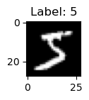
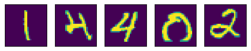

test = MNISTDataset(data_dir=None, train=True, transforms=transforms.ToTensor())[19:44:48] INFO - MNISTDataset: init
[19:44:48] INFO - ImageDataset: initA flexible, feature-rich dataset management module for machine learning image processing tasks, built on PyTorch and supporting various image dataset operations.
A foundational class for image-based datasets with advanced visualization capabilities: - Provides methods for dataset exploration - Supports image grid and random sample visualization - Flexible image display options
show_idx(): Display a single image by indexshow_grid(): Create a grid of imagesshow_random(): Display random images from the datasetA specialized implementation for the MNIST handwritten digit dataset: - Supports local and Hugging Face dataset loading - Configurable data transformations - Flexible data directory management
# Create MNIST dataset
dataset = MNISTDataset(
data_dir='../data/image',
train=True,
transforms=transforms.Compose([
transforms.ToTensor(),
transforms.Normalize((0.1307,), (0.3081,))
])
)
# Visualize a random sample
dataset.show_random(n=3)
# Get dataset details
print(f"Dataset size: {len(dataset)}")ImageDataset ()
Base class for image datasets providing visualization of (image, label) samples
MNISTDataset (data_dir:Optional[str]='../data/image', train=True, transforms:Optional[torchvision.transforms.transforms.Compo se]=Compose( ToTensor() Normalize(mean=(0.1307,), std=(0.3081,)) ), streaming:bool=False)
MNIST digit dataset
| Type | Default | Details | |
|---|---|---|---|
| data_dir | Optional | ../data/image | path where data is saved if None default to hugging face cache |
| train | bool | True | train or test dataset |
| transforms | Optional | Compose( ToTensor() Normalize(mean=(0.1307,), std=(0.3081,)) ) |
|
| streaming | bool | False | TODO: support and test streaming datasest |
Setup MNIST dataset. Download data if not found in specified location.
test = MNISTDataset(data_dir=None, train=True, transforms=transforms.ToTensor())[19:44:48] INFO - MNISTDataset: init
[19:44:48] INFO - ImageDataset: initprint(f" X: {test[0][0].shape}, y: {test[0][1]}")
dl = DataLoader(test, batch_size=64)
print(next(iter(dl))[0].shape, next(iter(dl))[1].shape) X: torch.Size([1, 28, 28]), y: 5
torch.Size([64, 1, 28, 28]) torch.Size([64])# output ( (C,H,W), int)
print(test[0][0].dtype, type(test[0][1]))
print(f"Number of samples in the dataset: {len(test)}")
# get item helper
X, y = test[0]
print(X.shape, y, X.type(), type(y))
# display each digit
test.show_idx(0)
# split data
train, dev = test.train_dev_split(0.8)
print(len(train), len(dev))torch.float32 <class 'int'>
Number of samples in the dataset: 60000
torch.Size([1, 28, 28]) 5 torch.FloatTensor <class 'int'>
48000 12000It is convenient to keep setup of specific dataset for an experiment in a config file for reproductibility
# instantiate dataset from yaml config file
cfg = OmegaConf.load("../config/image/data/mnist.yaml")
print(cfg.dataset)
test = instantiate(cfg.dataset)
type(test)
# output ( (B,C, H,W), int)
print(test[0][0].dtype, type(test[0][1]))
print(f"Number of samples in the dataset: {len(test)}")
# get item helper
X, y = test[0]
print(X.shape, y, X.type(), type(y))
# display each digit
test.show_idx(0)
# split data
train, dev = test.train_dev_split(0.8)[19:44:52] INFO - MNISTDataset: init
[19:44:52] INFO - ImageDataset: init{'_target_': 'nimrod.image.datasets.MNISTDataset', 'data_dir': '../data/image', 'train': False, 'transforms': {'_target_': 'torchvision.transforms.ToTensor'}}
torch.float32 <class 'int'>
Number of samples in the dataset: 10000
torch.Size([1, 28, 28]) 7 torch.FloatTensor <class 'int'>MNISTDataModule (data_dir:Optional[str]='~/Data/', transforms:Union[torch vision.transforms.transforms.Compose,Callable,NoneType]= Compose( ToTensor() Normalize(mean=(0.1307,), std=(0.3081,)) ), train_val_test_split:List[float]=[0.8, 0.1, 0.1], batch_size:int=64, num_workers:int=0, pin_memory:bool=False, persistent_workers:bool=False)
Helper class that provides a standard way to create an ABC using inheritance.
| Type | Default | Details | |
|---|---|---|---|
| data_dir | Optional | ~/Data/ | path to source data dir |
| transforms | Union | Compose( ToTensor() Normalize(mean=(0.1307,), std=(0.3081,)) ) |
|
| train_val_test_split | List | [0.8, 0.1, 0.1] | train val test % |
| batch_size | int | 64 | size of compute batch |
| num_workers | int | 0 | num_workers equal 0 means that it’s the main process that will do the data loading when needed, num_workers equal 1 is the same as any n, but you’ll only have a single worker, so it might be slow |
| pin_memory | bool | False | If you load your samples in the Dataset on CPU and would like to push it during training to the GPU, you can speed up the host to device transfer by enabling pin_memory. This lets your DataLoader allocate the samples in page-locked memory, which speeds-up the transfer |
| persistent_workers | bool | False |
# check for abstract methods
pprint([(name, getattr(method,"__isabstractmethod__", False)) for (name, method) in DataModule.__dict__.items()])[('__module__', False),
('__init__', False),
('prepare_data', True),
('setup', True),
('train_dataloader', False),
('val_dataloader', False),
('test_dataloader', False),
('teardown', False),
('state_dict', False),
('load_state_dict', False),
('_sequential_split', False),
('__dict__', False),
('__weakref__', False),
('__doc__', False),
('__abstractmethods__', False),
('_abc_impl', False)]dm = MNISTDataModule(
data_dir='../data/image',
train_val_test_split=[0.8, 0.1, 0.1],
batch_size = 64,
num_workers = 0, # main process
pin_memory= False,
persistent_workers=False
)
# download or reference data from dir
dm.prepare_data()
# define train, eval, test subsets
dm.setup()
# len of splits
print(len(dm.data_train), len(dm.data_val), len(dm.data_test))
# access data batches via dataloader
test_dl = dm.test_dataloader()
X,Y = next(iter(test_dl))
print("X dim(B,C,W,H): ", X.shape, "Y: dim(B)", Y.shape)
# access data points directly by index
print(len(dm.data_test[0]), print(dm.data_test[0][0].shape))
imgs = [dm.data_test[i][0] for i in range(5)]
# display image samples
ImageDataset.show_grid(imgs)
# labels are ints
lbls = [dm.data_test[i][1] for i in range(5)]
print(lbls)[19:44:56] INFO - Init MNIST DataModule
[19:44:56] INFO - MNISTDataset: init
[19:44:56] INFO - ImageDataset: init
[19:45:00] INFO - MNISTDataset: init
[19:45:00] INFO - ImageDataset: init
[19:45:04] INFO - MNISTDataset: init
[19:45:04] INFO - ImageDataset: init
[19:45:09] INFO - MNISTDataset: init
[19:45:09] INFO - ImageDataset: init56000 7000 7000
X dim(B,C,W,H): torch.Size([64, 1, 28, 28]) Y: dim(B) torch.Size([64])
torch.Size([1, 28, 28])
2 None
[9, 7, 9, 4, 4]
cfg = OmegaConf.load("../config/image/data/mnist.yaml")
print(cfg.datamodule)
dm = instantiate(cfg.datamodule)
dm.prepare_data()
dm.setup()
test_dl = dm.test_dataloader()
len(dm.data_test[0])
imgs = [dm.data_test[i][0] for i in range(5)]
ImageDataset.show_grid(imgs)
print(type(dm))[19:45:12] INFO - Init MNIST DataModule
[19:45:12] INFO - MNISTDataset: init
[19:45:12] INFO - ImageDataset: init{'_target_': 'nimrod.image.datasets.MNISTDataModule', 'data_dir': '../data/image', 'train_val_test_split': [0.8, 0.1, 0.1], 'batch_size': 64, 'num_workers': 0, 'pin_memory': False, 'persistent_workers': False}[19:45:17] INFO - MNISTDataset: init
[19:45:17] INFO - ImageDataset: init
[19:45:20] INFO - MNISTDataset: init
[19:45:20] INFO - ImageDataset: init
[19:45:24] INFO - MNISTDataset: init
[19:45:24] INFO - ImageDataset: init<class 'nimrod.image.datasets.MNISTDataModule'>